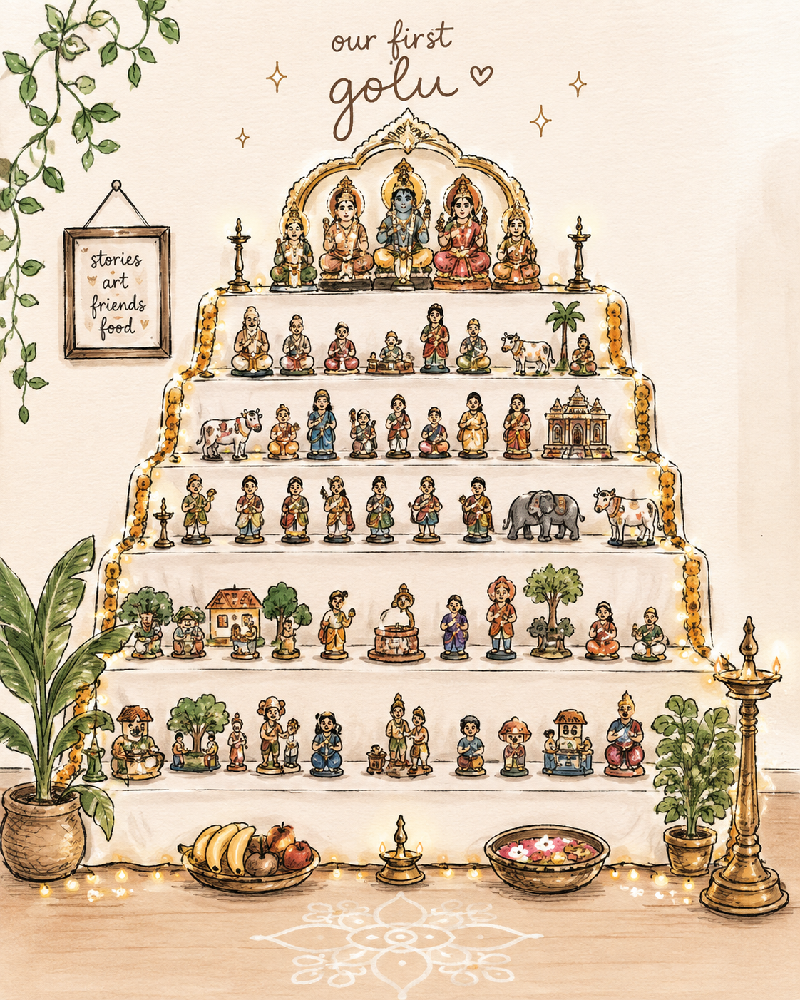

Navaratri · South India
Golu
Welcome. This is a small collection of stories told through the dolls and figures of Golu, the festive display that brings Navaratri into the home.

So, what exactly is Golu?
Every fall, families across South India spend an unreasonable amount of time arranging dolls on elaborate sets of steps. There are gods and goddesses, kings and queens, animals, miniature villages, weddings, markets, and occasionally entire scenes that look like someone got carried away building a tiny civilization.
This is Golu (also called Kolu or Bommai Golu), a tradition celebrated during Navaratri, a nine-night Hindu festival honoring the goddess in her many forms and the triumph of good over evil.
The dolls are arranged on an odd number of steps (usually three, five, seven, or nine), and every family has its own collection. Some dolls are passed down through generations, while others are acquired over the years. The result is a wonderfully eclectic collection of mythology, history, everyday life, and whatever else the family decided deserved a place on the steps.
Some context for all the idols
If you're unfamiliar with Hinduism, the sheer number of gods, goddesses, and mythological characters can be a little confusing. So here's some context that might help make sense of what you're looking at.
In many Hindu philosophical traditions, there's an acknowledgment that the human mind isn't particularly well equipped to comprehend the infinite nature of reality.
So — stories, symbols, and personified deities give our mere plebian minds something more tangible to think about.
In fact, one way to summarize the non-dualistic school of Hindu philosophy is: It's not that there are many gods, or even that there is one God. It's that there is only God.
The idea is that everything is ultimately an expression of the same underlying reality, called Brahman. The various gods and goddesses are different ways of representing and understanding aspects of that reality. This isn't a universal interpretation across all Hindu traditions, but it's a useful lens for understanding why there are so many different deities and stories.
And that's where the mythology comes in. These stories often explore surprisingly recognizable human problems: jealousy, ambition, family drama, loyalty, morality, power, and what people owe one another. Some may also preserve elements of historical events that have been embellished through centuries of retelling. Think of the Iliad and the Odyssey: there really was a city called Troy, and there may have been a conflict behind the legends, but the gods intervening in battles are another matter.
So the dolls aren't necessarily meant to be understood as literal representations of historical events. They're often characters in stories that generations of people have used to think about the world and their place in it.
And where does the party come in?
Traditionally, during the nine nights of Navaratri, families invite friends, relatives, and neighbors over to see their Golu. There are lamps, music, sweets, gifts, and a great deal of explaining who all the tiny people are and what they're doing.
Children grow up hearing these stories, asking questions, and eventually passing them along themselves. It's a tradition that combines storytelling, philosophy, art, and community, with an impressive amount of miniature set design.
Explore the stories
Each story is told through a figure or scene from the display.